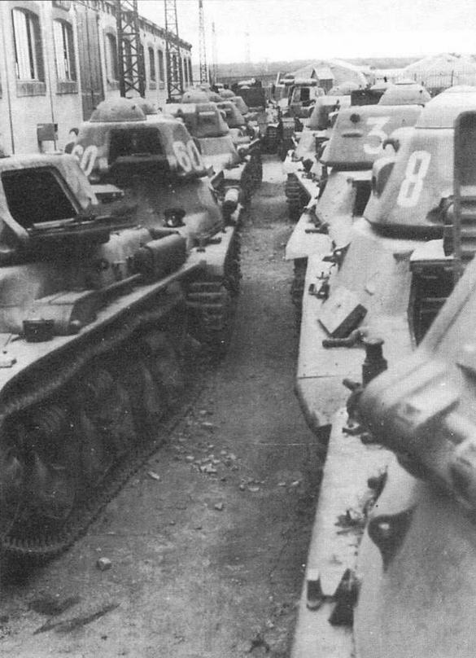
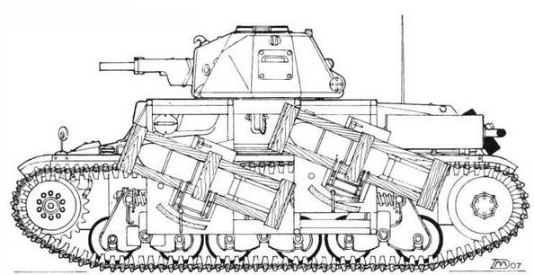
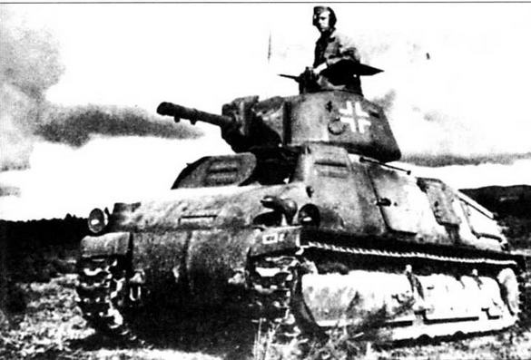
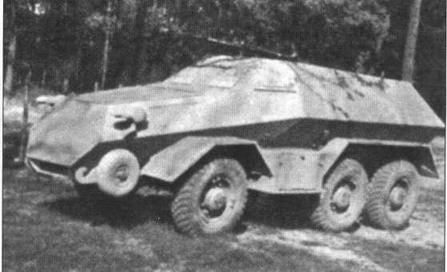
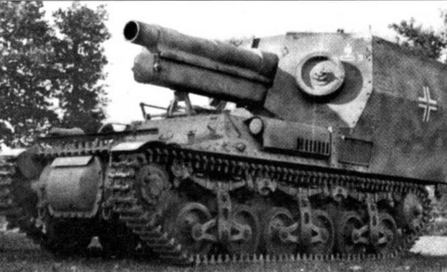
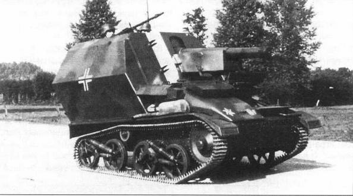
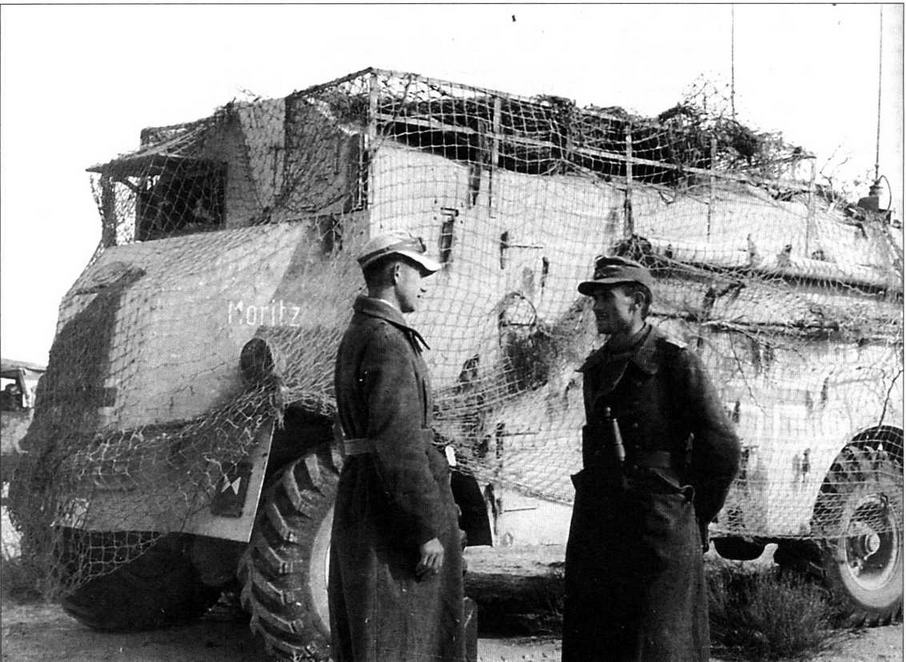
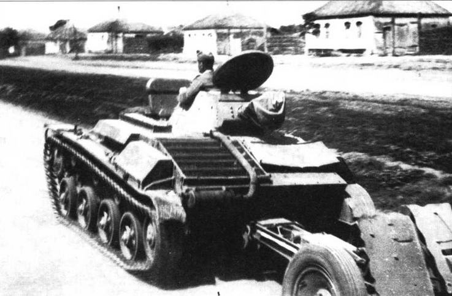
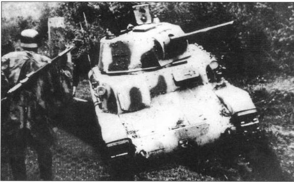
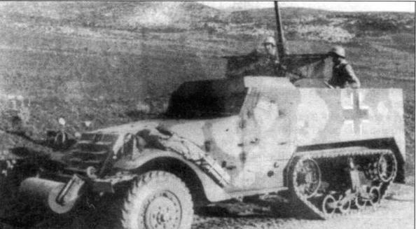

Михаил Борисович Барятинский
Трофейная бронетанковая техника Вермахта
В ходе боевых действий Второй мировой войны германские войска захватили в оккупированных странах значительное количество разнообразных бронированных машин, которые затем широко использовались в полевых войсках Вермахта, войсках СС и различного рода охранных и полицейских формированиях. При этом часть из них переделывалась и перевооружалась, а остальные применялись в оригинальном исполнении. Число принятых немцами на вооружение бронированных боевых машин иностранных марок колебалось по разным странам от единиц до нескольких сотен.
Польша
Парк трофейного имущества. На переднем плане — танкетка TKS, на втором — танкетка ТК-3. Польша, 1939 год
На 1 сентября 1939 года в польских бронетанковых войсках (Вгоп Pancerna) насчитывалось 219 танкеток ТК-3, 13 — TKF, 169 — TKS, 120 танков 7ТР, 45 — R35, 34 — Vickers Е, 45 — FT17, 8 бронеавтомобилей wz.29 и 80 — wz.34. Кроме того, некоторое количество боевых машин разных типов находилось в учебных частях и на предприятиях. 32 танка FT17 входили в штат бронепоездов и использовались как бронедрезины. С этим танковым парком Польша и вступила во Вторую мировую войну.
В ходе боевых действий какая- то часть техники была уничтожена, а уцелевшая досталась в качестве трофеев Вермахту. Немцы довольно быстро ввели в состав Панцерваффе значительное количество польских боевых машин. В частности, танками 7ТР укомплектовали 203-й отдельный танковый батальон. Вместе с танкетками TKS танки 7ТР поступили и в 1-й танковый полк 1-й танковой дивизии. В боевой состав 4-й и 5-й танковых дивизий вошли танкетки ТК-3 и TKS. Все названные боевые машины приняли участие в победном параде, устроенном немцами в Варшаве 5 октября 1939 года. При этом танки 7ТР 203-го батальона были уже перекрашены в стандартный серый цвет Панцерваффе. Впрочем, как оказалось, эта акция носила чисто пропагандистский характер. В дальнейшем в боевых частях Вермахта трофейная польская бронетехника не использовалась. Танки Panzerkampfwagen 7ТР(р) и танкетки Leichte Panzerkampfwagen TKS(p) вскоре отдали в распоряжение полиции и охранных частей войск СС. Некоторое количество танкеток TKS было передано союзникам Германии: Венгрии, Румынии и Хорватии.
Захваченные бронеавтомобили wz.34 использовались немцами исключительно в полицейских целях, так как никакой боевой ценности эти устаревшие машины не имели. Некоторое число броневиков данного типа было передано хорватам и использовалось теми против партизан на Балканах.
Брошенный без каких-либо видимых повреждений легкий танк 7ТР. Польша, 1939 год. Этот танк выпускался в двух вариантах: двухбашенном и однобашенном. Вермахтом ограниченно использовался только второй вариант, вооруженный 37-мм пушкой Немецкие солдаты осматривают танкетку TKS, захваченную вместе с перевозившим ее грузовым автомобилем Ursus. Сентябрь 1939 года Spahwagen wz 34 leichte Panzerkampfwagen TKS(p) Танки 7ТР из состава 203-го танкового батальона Вермахта во время парада в Варшаве. 5 октября 1939 года. Боевые машины выкрашены в темно-серый «немецкий» цвет
Бельгия
К 10 мая 1940 года (началу боевых действий на Западном фронте) бельгийская армия имела на вооружении более 200 танков и самоходно-артиллерийских установок. Основу танкового парка составляли 42 легкие машины Vickers Т. 15 и восемь ACG1 (экспортный вариант французского легкого танка Renault АМС35). На вооружении противотанковых подразделений шести кадровых и шести резервных пехотных дивизий состояло около 160 САУ Т.13.
Для буксировки 47-мм противотанковых пушек в Бельгии был развернут лицензионный выпуск легких гусеничных тягачей Tracteur chenille Vickers-Carden-Loyd Utility (английский тягач Vickers Utility В). До начала боевых действий в войска поступило около 30 таких машин. В кавалерийских дивизиях средством буксировки противотанковых орудий стал полноприводной легкобронированный тягач Ford/Marmon-Harrington. Эта машина собиралась в Антверпене на шасси однотонного автомобиля Ford 81Y с использованием переднего приводного моста фирмы Marmon-Flarrington. Всего было изготовлено 68 тягачей.
Трофейная бельгийская бронетехника — танки Т.15 и самоходная артустановка Т.13 Type III — на одной из площадей Брюсселя. 1940 год В Вермахте легкий танк Т.15 (на фото слева), получивший обозначение Panzerspahwagen VCL 701(e), и самоходки Т.13 практически не использовались Самоходная установка Panzerjager (Sfl) VA802(b), Гусеничный тягач Vickers-Carden-Loyd Utility буксирует 50-мм противотанковую пушку Рак 38
Несколько захваченных немцами танков Т.15 и ACG1 было передано затем полицейским подразделениям. Об использовании Вермахтом самоходных артиллерийских установок Салоп automotor Т.13 ничего не известно. Тем не менее немецкое обозначение — Panzerjage (Sfl) VA802(b) — эта машина получила.
Незначительное количество бельгийских полноприводных (4x4) легкобронированных артиллерийских тягачей Ford/Marmon-Herrington использовалось в 14-й и 35-й пехотных и 8-й танковой дивизиях Вермахта в качестве штабных и разведывательных машин. А вот трофейные гусеничные тягачи Tracteur chenille Vickers-Carden-Loyd Utility, получившие немецкое обозначение Artillerieschlepper VA601(b), применялись значительно шире для буксировки 50- и 75-мм противотанковых пушек. Был налажен ремонт и даже производство этих машин, продолжавшееся до тех пор, пока хватало комплектующих.
Легкий гусеничный танк Vickers-Carden- Loyd Utility получил в Вермахте обозначение Artillerieschlepper VA601(b). Машина, представленная на фото, несет регистрационный номер Вермахта, оснащена немецкой светомаскировочной фарой Notek и используется в службе Немецкой полевой почты Несколько башен, демонтированных немцами с трофейных танков ACG, использовались в качестве огневых точек на фортификационных сооружениях Атлантического вала Трофейный бельгийский легкобронированный артиллерийский тягач Ford/Marmon-Herrington использовался в качестве штабной машины в 8-й танковой дивизии Вермахта. На машине установлена радиостанция, а на левом крыле — немецкая светомаскировочная фара Notek. Треугольный флажок на левом крыле говорит о принадлежности автомобиля к дивизионному штабу Трофейный тягач Ford/Marmon-Herrington — машина командира 1-го батальона 11-го пехотного полка 14-й пехотной дивизии Вермахта. Верхняя часть дверцы водителя и вся дверца заднего пассажира откинуты На российских дорогах было нелегко и полноприводному Ford/Marmon- Herrington. На этой машине установлен пулемет MG34
Нидерланды
В Нидерландах немцы захватили достаточно мощные, но уже порядком устаревшие шведские броневики Landsverk 181 и Landsverk 182. Основным их достоинством было то, что они изготавливались на немецких шасси Mercedes-Benz G За/P и Bussing-NAG соответственно. В Вермахте голландские бронеавтомобили получили обозначение Panzerspahwagen L202(h) и использовались в основном для несения полицейской службы на оккупированных территориях, в том числе и в самой Голландии, а также в России. Однако поступили они и в некоторые боевые части. В составе 227-й пехотной дивизии Вермахта, например, с середины 1940 по апрель 1942 года имелось шесть бронеавтомобилей L202(h). Присутствие бронемашин этого типа на Восточном фронте подтверждается фактом захвата одной из них и последующей ее демонстрацией на выставке трофейной немецкой техники в Москве в ЦПКиО им.Горького.
Тяжелые бронеавтомобили Landsverk 181 и 182 внешне были очень похожи, отличаясь друг от друга в основном формой решеток и жалюзи моторного отсека Бронеавтомобиль L202(h) — экспонат выставки трофейной немецкой техники в ЦПКиО им.Горького в Москве. 1945 год Panzerspahwagen DAF 201(h) Два трофейных голландских бронеавтомобиля DAF М39, получивших в Вермахте обозначение DAF 201(h). 1940 год. Обе машины принадлежат к составу 18-й немецкой дивизии. У броневика на втором плане отсутствует вооружение в башне Бронеавтомобиль DAF 201(h), подбитый и захваченный войсками Красной Армии в 1943 году. По этой фотографии трудно судить, была ли эта машина выведена из строя артиллерийским огнем или подорвалась на мине
Помимо броневиков шведского производства немцы захватили в Голландии и несколько современных броневых автомобилей DAF М39. Сколько точно — неизвестно. Голландская армия успела получить 12 машин этого типа. В боевых действиях они не участвовали, но, как минимум, один броневик был взорван экипажем. Во всяком случае, официально 24 мая 1940 года Вермахтом были приняты только три бронеавтомобиля этого типа. Они получили обозначение Panzerspahwagen DAF 201(h) и использовались, в частности, в группе армий «Север» на Восточном фронте. Зимой 1943 года одна боевая машина этого типа была подбита и захвачена Красной Армией под Ленинградом.
Франция
К маю 1940 года французская армия имела 2637 танков нового типа. В их числе: 314 танков В1,210 — D1 и D2, 1070 — R35, AMR, АМС, 308 — Н35, 243 — S35, 392 — Н38, Н39, R40 и 90 танков FCM. Кроме того, в парках хранилось до 2000 старых боевых машин FT 17/18 (из них 800 боеспособных) периода Первой мировой войны и шесть тяжелых 2С. 600 бронеавтомобилей и 3500 бронетранспортеров и гусеничных тягачей дополняли бронетанковое вооружение сухопутных войск. Практически вся эта техника, как получившая повреждения в ходе боевых действий, так и абсолютно исправная, попала в руки немцев.
Можно смело утверждать, что никогда ранее ни одна армия мира не захватывала столько военной техники и боеприпасов, как Вермахт за время Французской кампании. Не знает история и примера, чтобы трофейное оружие в столь большом количестве принималось на вооружение армии-победительницы. Случай, бесспорно, уникальный! Все это касается и французских танков, точное число которых не называют даже немецкие источники. Отремонтированные и перекрашенные в германский камуфляж, с крестами на бортах, они воевали в рядах вражеской армии аж до 1945 года. Лишь небольшое их число, находившееся в Африке, а также в самой Франции в 1944 году, смогло вновь встать под французские знамена. Судьба же боевых машин, вынужденных действовать «под чужим флагом», сложилась по-разному.
Некоторые танки, захваченные исправными, использовались немцами еще в ходе боевых действий во Франции. Основная же масса бронетанковой техники после завершения «французского похода» стала свозиться в специально созданные парки, где проходила «техосмотр» с целью выяснения неисправностей. Затем техника направлялась для ремонта или переоборудования на французские же заводы, а оттуда поступала в германские воинские части.
Трофейные французские танки Renault R35 поначалу использовались Вермахтом в своем первоначальном виде, без каких-либо изменений, за исключением новых окраски и опознавательных знаков
Однако дальше формирования зимой 1941 года четырех полков и штабов двух бригад дело не пошло. Очень скоро выяснилось, что части, вооруженные французской бронетехникой, нельзя применять в соответствии с тактикой танковых войск Вермахта. Причем главным образом из-за технического несовершенства трофейных боевых машин. В результате уже в конце 1941 года все полки, имевшие французские танки, были перевооружены немецкими и чехословацкими боевыми машинами. Высвободившаяся трофейная техника пошла на укомплектование многочисленных отдельных частей и подразделений, несших в основном охранную службу на оккупированных территориях, в том числе частей СС и бронепоездов. География их службы была достаточно обширной: от островов в Ла-Манше на западе до России на востоке и от Норвегии на севере до Крита на юге,- Значительную часть боевых машин переоборудовали в разного рода САУ, тягачи и специальные машины.
На характер использования трофейных машин самым непосредственным образом влияли их тактико-технические характеристики. Непосредственно как танки предполагалось применять только Н35/39 и S35. По-видимому, решающим фактором стала их более высокая, чем у остальных машин, скорость. По первоначальным планам ими должны были быть укомплектованы четыре танковые дивизии.
После окончания боевых действий во Франции все исправные и неисправные танки R35 отправили на завод фирмы Renault в Париже, где проходили ревизию или восстановление. Из-за своей малой скорости R35 не мог использоваться в качестве боевого танка, и около 100 машин впоследствии немцы направили для несения охранной службы. 25 из них приняли участие в боях с югославскими партизанами. Большинство танков оснастили немецкими радиостанциями. Куполообразную командирскую башенку заменили плоским двухстворчатым люком.
Обкатка танками. Трофейный Renault R35 с двухстворчатым люком вместо куполообразной башенки французского образца и немецкой радиостанцией во время учебных занятий с новобранцами на территории Франции Panzerkampfwagen 35R(f) Легкий танк 35R 731(f) из состава 12-й танковой роты особого назначения. Эта рота, насчитывавшая 25 танков, вела противопартизанские действия на Балканах. Для повышения проходимости все машины были оснащены «хвостами»
Часть R35 немцы передали своим союзникам: 109 — Италии и 40 — Болгарии. В декабре 1940 года берлинская фирма Alkett получила заказ на переделку 200 танков R35 в САУ, вооруженных чешской 47-мм противотанковой пушкой. В качестве прототипа использовалась аналогичная САУ на шасси немецкого танка Pz.l. В начале февраля 1941 года первая самоходка на базе R35 покинула заводской цех. Пушка была установлена в открытой сверху рубке, размещенной на месте демонтированной башни. Лобовой лист рубки имел толщину 25 мм, а бортовые — 20 мм. Вертикальный угол наведения орудия колебался в пределах от -8° до +12°, горизонтальный составлял 35°. В кормовой нише рубки размещалась немецкая радиостанция. Экипаж состоял из трех человек. Боевая масса — 10,9 т. В опытном порядке одна САУ этого типа в 1941 году была вооружена немецкой 50-мм противотанковой пушкой Рак 38.
Из 200 заказанных машин 174 изготовили как САУ, а 26 — как командирские. На последних пушка не устанавливалась, а ее амбразура в лобовом листе рубки отсутствовала. Вместо пушки монтировался пулемет MG34 в шаровой установке Kugelblende 30.
Остальные танки R35 после демонтажа башен служили в Вермахте в качестве артиллерийских тягачей для 150-мм гаубиц и 210-мм мортир. Башни же были установлены на Атлантическом валу как неподвижные огневые точки.
Трофейный немецкий танк 35R 731(f) во время испытаний на НИБТПолигоне в подмосковной Кубинке. 1945 год Selbstfahrlafette 4,7-cm-Pak(f) Немецкая самоходная артиллерийская установка с 47-мм чехословацкой противотанковой пушкой на шасси французского танка R35
Как уже упоминалось выше, танки Hotchkiss Н35 и Н39 (в Вермахте они обозначались 35Н и 38Н) использовались немцами как... танки. На них также смонтировали двухстворчатые башенные люки и установили немецкие рации. Переделанные таким образом машины поступили на вооружение немецких оккупационных частей в Норвегии, на Крите и в Лапландии. Кроме того, они являлись промежуточным вооружением при формировании новых танковых дивизий Вермахта, например, 6, 7-й и 10-й. По состоянию на 31 мая 1943 года в Вермахте, Люфтваффе, войсках СС и др. эксплуатировалось 355 танков 35Н и 38Н.
15 машин этого типа в 1943 году передали Венгрии, еще 19, в 1944 году, — Болгарии. Несколько 38Н получила Хорватия.
В 1943 — 1944 годах 60 шасси танков «Гочкис» было переделано в 75-мм самоходную противотанковую пушку. Вместо снятой башни на корпусе танка монтировалась внушительных размеров открытая сверху рубка, в которой устанавливалась 75-мм пушка Рак 40. Толщина лобовых бронелистов рубки составляла 20 мм, бортовых — 10 мм. С экипажем из четырех человек боевая масса машин равнялась 12,5 т. Переделкой танков в САУ занималось предприятие Baukommando Becker (по- видимому, армейский ремзавод).
На этом же предприятии 48 «гочкисов» переделали в самоходку, вооруженную 105-мм гаубицей. Внешне она была подобна предыдущей машине, но в ее рубке размещалась 105-мм гаубица leFH 18/40. Углы наведения орудия по вертикали колебались в пределах от -2° до +22°. Экипаж состоял из пяти человек. 12 самоходок этого типа поступили на вооружение 200-го дивизиона штурмовых орудий.
Часть трофейных танков R35 была переделана в артиллерийские и эвакуационные тягачи. Обращает на себя внимание войсковая переделка — рубка механика- водителя
Французские танки R35, Н35 и FT17 в одном из немецких парков трофейной техники. Франция, 1940 год Трофейный танк 38H(f) одной из частей Люфтваффе. Машина вооружена 37-мм пушкой SA18, оборудована «хвостом» и радиостанцией Танки 38H(f) 2-го батальона 202-го танкового полка во время учебных занятий во Франции. 1941 год. На всех машинах куполообразные командирские башенки заменены люками с двухстворчатыми крышками, установлены немецкие радиостанции После перевооружения 201—204-го танковых полков немецкой бронетехникой трофейные французские танки несли охранную службу практически на всех театрах военных действий. Эти два танка Hotchkiss Н39 сфотографированы на заснеженной дороге в России. Март 1942 года Morserzugmittel 38H(f) Трофейный немецкий танк 38H(f) на НИБТПолигоне в Кубинке. 1945 год. Обращает на себя внимание то, что эта машина покрыта «ц иммеритом»
Для подразделений, вооруженных самоходками на базе танков «Гочкис», 24 танка переоборудовали в машины передовых артиллерийских наблюдателей, так называемые grosser Funk-und Befehlspanzer 38H(f). Небольшое количество 38Н использовалось в учебных целях, в качестве тягачей, подвозчиков боеприпасов и БРЭМ. Интересно отметить попытку усиления огневой мощи танка за счет установки четырех стартовых рам для 280- и 320-мм реактивных снарядов. По инициативе 205-го танкового батальона (Pz. Abt. 205) таким образом оборудовали 11 танков.
Легкий танк 38H(f) во время учебных занятий в одной из частей Вермахта на территории Норвегии. 1942 год Трофейный французский танк 38H(f) во время проведения одной из противопартизанских операций в горах Югославии. 1943 год Танк 38H(f) во время учебных занятий наезжает на дымовую гранату. 211-й танковый батальон, в состав которого входила эта машина, в 1941— 1945 годах дислоцировался на территории Финляндии
По причине своей малочисленности танки FCM36 по прямому назначению Вермахтом не применялись. 48 машин переделали в самоходно-артиллерийские установки: 24 — с 75-мм противотанковой пушкой Рак 40, остальные — со 105-мм гаубицей leFH 16. Все самоходки были изготовлены в Baukommando Becker. Восемь противотанковых САУ, также как и несколько 105-мм самоходных гаубиц, поступили на вооружение 200-го дивизиона штурмовых орудий, включенного в состав 21-й танковой дивизии. Часть самоходок получила и так называемая Быстрая бригада «Запад» — Schnellen Brigade West.
Совершенно не использовались немцами и немногие доставшиеся им средние танки D2. Известно лишь, что их башни устанавливались на хорватских бронепоездах.
Что же касается средних танков SOMUA, то большая часть из 297 захваченных немцами единиц под обозначением Pz.Kpfw.35S 739(f) была включена в состав танковых частей Вермахта. SOMUA подверглись некоторой модернизации: на них установили немецкие радиостанции Fu 5 и дооборудовали командирскую башенку двухстворчатым люком (но такой переделке подверглись не все машины). Кроме того, добавили четвертого члена экипажа — радиста, а заряжающий переместился в башню, где теперь находились два человека. Эти танки поступали главным образом на укомплектование танковых полков (100, 201, 202, 203, 204 Panzer-Regiment) и отдельных танковых батальонов (202, 205, 206, 211, 212, 213, 214, 223 Panzer-Abteilung). Большая часть этих подразделений дислоцировалась во Франции и служила резервом для пополнения танковых частей Вермахта.
В 205-м танковом батальоне 11 танков 384(f) были оборудованы пусковыми рамами для 280- и 320-мм реактивных снарядов. На фото слева запечатлен момент выстрела На каждом танке 38H(f) крепились четыре пусковые рамы. На фото видно, как фельдфебель ввинчивает в реактивный снаряд взрыватель
Selbstfahrlafette fur 28/32-ст Wurfrahmen
Например, в начале 1943 года на базе 100-го танкового полка (вооруженного в основном танками S35) вновь сформировали 21-ю танковую дивизию, полностью разгромленную под Сталинградом частями Красной Армии. Возрожденная дивизия размещалась в Нормандии, в июне 1944 года после высадки союзников во Франции принимала активное участие в боях.
По состоянию на 1 июля 1943 года в действующих частях Вермахта (не считая складов и парков) имелось 144 SOMUA: в группе армий «Центр» — 2, в Югославии — 43, во Франции — 67, в Норвегии — 16 (в составе 211-го танкового батальона), в Финляндии — 16 (в составе 214-го танкового батальона). На 26 марта 1945 года в немецких танковых частях еще числилось пять танков 35S, действовавших против англо-американских войск на Западном фронте.
Американский солдат осматривает захваченный танк 38H(f). 1944 год Машина передовых артиллерийских наблюдателей на базе 38H(f) 105-мм самоходная гаубица leFH 18 на шасси легкого танка 38H(f)
Следует отметить, что некоторое количество танков SOMUA немцы использовали для борьбы с партизанами и охраны тыловых объектов, 60 единиц были переоборудованы в артиллерийские тягачи (с них демонтировали башню и верхнюю переднюю часть корпуса), а 15 машин поступили на вооружение бронепоездов № 26, 27, 28, 29 и 30. Конетруктивно эти бронепоезда состояли из полубронированного паровоза, двух открытых сверху бронеплатформ для пехоты и трех специальных платформ с аппарелями для танков S35.
Самоходно-артиллерийская установка Marder I, вооруженная 75-мм противотанковой пушкой Рак 40 Marder I на Восточном фронте. Канун операции «Цитадель», июнь 1943 года На фото слева — генерал-фельдмаршал Э.Роммель (крайний слева) инспектирует подразделение самоходных противотанковых пушек Marder I. Франция, 1944 год. На фото в центре — САУ с 75-мм пушкой на базе танка FCM(f) в заводском цехе 7,5-cm-Pak 40(Sf) auf Fahrgestell FCM(f)
Танки бронепоезда № 28 принимали участие в штурме Брестской крепости, для чего им пришлось покинуть свои платформы. 23 июня 1941 года одна из этих машин была подбита ручными гранатами у Северных ворот крепости, там же огнем из зенитного орудия повредили еще один S35. Третий танк прорвался в центральный двор цитадели, где был подбит артиллеристами 333-го стрелкового полка. Две машины немцам удалось эвакуировать сразу же. После ремонта они вновь участвовали в боях. В частности, 27 июня одну из них немцы применили против Восточного форта. Танк вел огонь по амбразурам форта, в результате, как говорилось в докладе штаба 45-й немецкой пехотной дивизии, русские стали вести себя тише, но непрерывная стрельба снайперов продолжалась из самых неожиданных мест.
В составе упомянутых бронепоездов танки S35 эксплуатировались вплоть до 1943 года, когда их заменили на чехословацкие Pz.38(t).
После оккупации Франции немцы отремонтировали и вернули в строй 161 тяжелый танк В1 bis, получивший в Вермахте обозначение Pz.Kpfw. В2 740(f). На большинстве машин сохранили штатное вооружение, но установили немецкие радиостанции, а командирскую башенку заменили простым люком с двухстворчатой крышкой. С нескольких танков сняли башни и демонтировали все вооружение. В таком виде их использовали для обучения механиков-водителей.
В марте 1941 года фирма Rheinmetall-Borsig в Дюссельдорфе переделала 16 боевых машин в самоходные установки, смонтировав на месте прежнего вооружения и башни открытую сверху и сзади броневую рубку со 105-мм гаубицей leFH 18.
10,5-cm-leFH 16(Sf) auf Fahrgestell FCM(f) 105-мм самоходная гаубица на базе трофейного французского танка FCM. Внутренний объем открытой сверху броневой рубки. Хорошо видно размещение боекомплекта
На базе французских тяжелых танков немцы создали большое количество боевых огнеметных машин. На совещании у Гитлера 26 мая 1941 года обсуждалась возможность вооружения огнеметами трофейных танков В2. Фюрер распорядился сформировать две роты, укомплектованные такими машинами. На первые 24 В2 установили огнеметы той же системы, что и на немецких Pz.ll (F), работавших на сжатом азоте. Огнемет располагался внутри корпуса, на месте снятой 75-мм пушки. Все танки направили в 10-й батальон, сформированный к 20 июня 1941 года. В его состав вошли две роты, в каждой, кроме 12 огнеметных машин, имелось по три танка поддержки (линейные В2, вооруженные 75-мм пушкой). 102-й батальон прибыл на Восточный фронт уже 23 июня и был подчинен штабу 17-й армии, дивизии которой штурмовали Перемышльский укрепленный район.
Первые танки S35, подготовленные для службы в Вермахте. Танки выкрашены в серый цвет, оснащены радиостанциями и фарами Notek. На правом борту укреплены характерной формы ящики для амуниции Колонна танков 35S(f) одной из частей Вермахта проходит под Триумфальной аркой в Париже. 1941 год Panzerkampfwagen 35S(f) Танк 35S(f) из состава 204-го немецкого танкового полка. Крым, 1942 год Захваченный Красной Армией танк 35S(f) на выставке трофейной техники в ЦПКиО им.Горького в Москве. Июль 1943 года Германский бронепоезд № 28 (Panzerzug Nr.28). Восточный фронт, лето 1941 года. В состав этого бронепоезда входили три специальные платформы (Panzertragerwagen) с танками S35. Хорошо видны узлы крепления танка на платформе. Откидная аппарель, с помощью которой танк мог сойти на грунт, уложена на балластную платформу. За платформой с танком видна укрытая брезентом платформа для пехоты. Платформа для пехоты, но уже без брезента
24 июня 1941 года батальон поддерживал наступление 24-й пехотной дивизии. 26 июня атаки были продолжены, но на этот раз совместно с 296-й пехотной дивизией. 29 июня при участии огнеметных танков начался штурм советских дотов. Донесение командира 2-го батальона 520-го пехотного полка позволяет восстановить картину боя. Вечером 28 июня 102-й батальон огнеметных танков вышел на указанные исходные позиции. На звук танковых двигателей противник открыл огонь из пушек и пулеметов, но потерь не было. С задержкой, вызванной густым туманом, в 5.55 29 июня 8,8 cm Flak открыли огонь прямой наводкой по амбразурам дотов. Зенитчики вели огонь до 7.04, когда большинство амбразур было поражено и замолчало. По зеленой ракете 102-й батальон огнеметных танков перешел в атаку в 7.05. Инженерные подразделения сопровождали танки. Их задачей было установить фугасные заряды под оборонительные укрепления противника. Когда некоторые доты открыли огонь, саперы были вынуждены укрыться в противотанковом рву. 88-мм зенитки и другие виды тяжелого вооружения открыли ответный огонь. Саперы смогли достичь назначенных целей, заложить и подорвать фугасные заряды. Доты были сильно повреждены огнем 88-мм орудий и вели стрельбу только периодически. Огнеметные танки смогли приблизиться к дотам почти вплотную, но защитники укреплений оказывали отчаянное сопротивление, подбив два из них из 76-мм пушки.
Танк S35 на платформе бронепоезда № 28. Хорошо видно броневое прикрытие ходовой части танка
Танк 35S(f) командира 2-й роты 214-го танкового батальона. Норвегия, 1942 год Командирский танк, оснащенный второй радиостанцией (ее рамочная антенна закреплена на крыше МТО). Вместо орудия установлен его деревянный макет. Франция, 1941 год Выкрашенный в белый цвет средний танк 35S(f) из состава 211-го немецкого танкового батальона. Опознавательным знаком для машин этого батальона была цветная полоса, нанесенная по периметру башни Танк 35S(f) из состава 100-г о танкового полка в Нормандии. 1944 год 35S(f) 6-й роты 100-го танкового полка 21-й танковой дивизии. Нормандия, 1944 год. К моменту высадки союзников перевооружение полка танками Pz.IV еще не было завершено, поэтому в бой пошли и трофейные французские танки Учебные занятия с трофейными французскими танками Blbis в 100-м запасном танковом батальоне Вермахта. Франция, 1941 год (справа). Один из танков B2(f) 213-го танкового батальона. 1944 год. Боевые машины этой части, дислоцировавшейся на Нормандских островах, встретили конец Второй мировой войны, ни разу не побывав в бою Panzerkampfwagen B2(f)
Обе машины сгорели, но экипажи успели их покинуть. Огнеметным танкам так и не удалось поразить доты, так как горючая смесь не могла проникнуть внутрь сквозь шаровые установки. Защитники укреплений продолжали вести огонь.
30 июня 102-й батальон передали в непосредственное подчинение штаба 17-й армии, а 27 июля он был расформирован.
Дальнейшее развитие немецких танковых огнеметов происходило с использованием все тех же Pz.B2. Для новых образцов вооружения использовали насос, действовавший от двигателя J10. Эти огнеметы имели дальность стрельбы до 45 м, запас горючей смеси позволял производить 200 выстрелов. Их установили на прежнем месте — в корпусе. Резервуар с горючей смесью размещался сзади на броне. На фирме «Даймлер-Бенц» разработали схему улучшения бронирования танка, на фирме «Кебе» — огнемет, а на фирме «Вегманн» производили окончательную сборку.
Серийный огнеметный танк B2(F1) из состава 213-го танкового батальона. Хорошо видны установка огнемета и смотровой прибор стрелка- огнеметчика Огнеметный танк B2(F1) в бою. Дальность стрельбы из огнемета достигала 45 м
Планировалось переоборудовать таким образом десять танков В2 в декабре 1941 года и следующие десять — в январе 1942-го. В действительности же выпуск огнеметных машин проходил гораздо медленнее: хотя пять единиц и было готово уже в ноябре, но в декабре удалось изготовить только три, в марте 1942 года — еще три, в апреле — две, в мае — три и, наконец, в июне — последние четыре. О дальнейшем ходе работ неизвестно, поскольку заказ на переделку направили французским предприятиям.
Всего же в 1941 — 1942 годах изготовили около 60 огнеметных танков B2(FI). Вместе с другими В2 они состояли на вооружении довольно многих частей немецкой армии. Так, например, по состоянию на 31 мая 1943 года в 223-м танковом батальоне имелось 16 В2 (из них 12 — огнеметные); в 100-й танковой бригаде — 34 (24); в 213-м танковом батальоне — 36 (10); в горнострелковой дивизии СС «Принц Евгений» — 17 В2 и В2 (FI).
В2 использовались в Вермахте до конца войны, особенно в войсках, расположенных на территории Франции. В феврале 1945 года здесь еще находилось около 40 таких танков.
Что касается французских танков других марок, то они практически не использовались Вермахтом, хотя многие из них получили немецкие обозначения. Исключение составляет, пожалуй, лишь легкий разведывательный танк AMR 35ZT. Некоторая часть этих, не имевших никакой боевой ценности машин в 1943 — 1944 годах была переоборудована в самоходные минометы. Башню с танка демонтировали, а на ее месте соорудили открытую сверху и сзади рубку коробчатой формы, сваренную из 10-мм бронелистов. В рубке установили 81-мм миномет Granatwerfer 34. Экипаж машины — четыре человека, боевая масса составляла 9 т.
Рассказ об использовании трофейных французских танков в Вермахте был бы неполным без упоминания об FT 17/18. В результате кампании 1940 года немцы захватили 704 танка «Рено» FT, из них только около 500 — в исправном состоянии. Часть машин была отремонтирована и под обозначением Pz.Kpfw. 17R 730 (f) или 18R 730 (f) (танки с литой башней) использовалась для патрульно-охранной службы. «Рено» служили и для обучения механиков- водителей германских частей на территории Франции. Часть разоруженных машин использовали в качестве подвижных командных и наблюдательных пунктов. В апреле 1941 года сотню «Рено» FT с 37-мм пушками выделили для усиления бронепоездов. Их крепили на железнодорожные платформы, получая таким образом дополнительные броневагоны. Эти бронепоезда патрулировали дороги вдоль побережья Ла- Манша. В июне 1941 года некоторое количество бронепоездов с «Рено» выделили для борьбы с партизанами на оккупированных территориях. Пять танков на железнодорожных платформах использовали для защиты дорог в Сербии. Для тех же целей несколько «Рено» использовались и в Норвегии. Постоянно эксплуатировали трофейные «Рено» и Люфтваффе, которые применяли их (всего около 100 штук) на охране аэродромов, а также для расчистки взлетных полос. Для этого на нескольких танках без башен установили бульдозерные отвалы.
Panzerspahwagen AMR 34ZT(f) 8-cm-schwerer Granatwerfer 34 aufAMR 34ZT(f) 80-мм самоходный миномет на базе легкого танка AMR 34ZT(f) Группа трофейных французских танков FT17 одного из подразделений Люфтваффе. Эти устаревшие боевые машины, имевшие ограниченную подвижность, тем не менее с успехом использовались для охраны тыловых аэродромов Часть танков FT17 использовалась немцами в качестве неподвижных огневых точек — своего рода бункеров. Этот танк установлен на блокпосту на перекрестке дорог близ Дьеппа в 1943 году. На переднем плане — немецкий солдат возле трофейного французского пулемета Hotchkiss mod. 1914 (в Вермахте — sMG 257(f)
В 1941 году 20 башен «Рено» FT с 37-мм пушками установили на бетонные основания на побережье Ла-Манша.
После поражения Франции в руки немцев попало и значительное число французских бронеавтомобилей. Однако большинство из них были устаревших конструкций и не соответствовали требованиям Вермахта. От таких машин немцы поспешили избавиться и передали их своим союзникам. В итоге в немецкой армии использовался только один тип французского бронеавтомобиля — AMD Panhard 178.
Более 200 таких машин под обозначением Pz.Spah. 204(f) поступило в полевые войска и части СС, а 43 были переделаны в бронедрезины. На последних установили немецкую радиостанцию с антенной рамочного типа. 22 июня 1941 года на Восточном фронте имелось 190 «панаров», 107 из них к концу года были потеряны. По данным на июнь 1943 года, в Вермахте еще оставалось 30 машин на Восточном фронте и 33 — на Западном. Кроме того, часть броневиков к этому времени передали в охранные дивизии.
Французское правительство Виши получило от немцев разрешение сохранить небольшое количество бронеавтомобилей данного типа, но при этом они потребовали демонтировать штатные 25-мм пушки. В ноябре 1942 года при вторжении гитлеровцев в «свободную» зону (неоккупированный юг Франции) эти машины были захвачены и использовались для полицейских функций, а часть «панаров», не имевших башен, в 1943 году немцы вооружили 50-мм танковой пушкой.
Бронеавтомобиль Panhard AMD178 в 39-м противотанковом дивизионе 3-й немецкой танковой дивизии. Лето 1940 года. По неизвестным причинам у машины отсутствует башня, в качестве вооружения используются два пулемета MG34 Трофейные бронеавтомобили Panhard 178(f) использовались и в полицейских формированиях на оккупированных территориях. Бронемашина в ходе «наведения порядка» в русской деревне. Справа — бронеавтомобиль Panhard 178(f), оснащенный новой, открытой сверху, башней с 50-мм пушкой KwK L42. 1943 год
Весьма активно использовался немцами и значительный по численности парк французских артиллерийских тягачей и бронетранспортеров, включавший в себя как колесные и гусеничные, так и полугусеничные машины. И если полугусеничные автомобили Citroen Р19 эксплуатировались в бригаде «Запад» без каких- либо серьезных переделок, то многие другие образцы техники подверглись значительным изменениям.
Так, например, немцы использовали французские полноприводные двух- и трехосные специализированные армейские грузовики Laffly V15 и W15. Машины эти эксплуатировались в различных частях Вермахта в основном в первозданном состоянии. Однако в бригаде «Запад» 24 грузовика W15T переоборудовали в подвижные радиостанции, а несколько машин оснастили бронекорпусами, превратив в колесные бронетранспортеры.
С 1941 года в германских войсках, дислоцированных во Франции, в качестве артиллерийского тягача для 75-мм противотанковых пушек, 105-мм легких полевых гаубиц и минометов, транспортера для перевозки личного состава, санитарной и радиомашины, перевозчика боеприпасов и снаряжения применялся трофейный полугусеничный трактор Unic Р107 — leichter Zugkraftwagen U304(f). Только в составе бригады «Запад» таких машин насчитывалось более сотни. В 1943 году некоторое их количество оборудовали броневым корпусом с открытым сверху кузовом (для этого пришлось удлинить на 350 мм раму шасси) и переклассифицировали в бронетранспортеры — leichter Schutzenpanzerwagen U304(f), по размерам близкие к германским Sd.Kfz.250. При этом часть машин имела открытые, а часть — закрытые корпуса. Несколько бронетранспортеров вооружили 37-мм противотанковой пушкой Рак 36 со штатным щитом.
Некоторое число тракторов было переоборудовано в полубронированные ЗСУ, вооруженные 20-мм зенитным автоматом Рак 38. Еще большей серией (72 единицы) в Baukommando Becker изготовили бронированную ЗСУ с аналогичным вооружением. Эти машины также поступили на вооружение бригады «Запад».
Радиомашина на базе Panhard 178(f) из состава 1-й танковой дивизии СС «Лейбштандарт Адольф Гитлер». Вместо башни машина оснащена неподвижной рубкой, в лобовом листе которой установлен пулемет МС34 Бронеавтомобиль-дрезина Panhard 178(f). Машины этого типа придавались бронепоездам и предназначались для разведки. Как и немецкие броневики, трофейный французский бронеавтомобиль оснащен рамочной антенной, способ крепления которой не препятствовал круговому вращению башни
В качестве артиллерийских тягачей использовались более тяжелые полугусеничные тракторы SOMUA MCL — Zugkraftwagen S303(f) и SOMUA MCG — Zugkraftwagen S307(f). Часть из них в 1943 году также оборудовали броневым корпусом. При этом их предполагалось применять как в качестве бронированных тягачей — mittlerer gepanzerter Zugkraftwagen S303(f), так и как бронетранспортеры — mittlerer Schutzenpanzerwagen S307(f). Кроме того, на их базе создавались боевые машины: m SPW S307(f) mit Reihenwerfer — самоходный многоствольный миномет (изготовлено 36 единиц); в кормовой части машины на специальной раме был смонтирован двухрядный пакет из 16 стволов французских 81-мм минометов; 7,5 cm Рак 40 auf m SPW S307(f) — самоходная 75-мм противотанковая пушка (изготовлено 72 единицы); бронированный перевозчик боеприпасов (изготовлено 48 единиц); инженерная машина, оснащенная специальными мостками для преодоления рвов; 8 cm Raketenwerfer auf m.gep.Zgkw. S303(f) — реактивная пусковая установка с пакетом направляющих для пуска 48 реактивных снарядов, скопированная с советской 82-мм пусковой установки БМ-8-24 (изготовлено 6 единиц); 8-cm schwerer Reihenwerfer auf m.gep Zgkw. S303(f) — самоходный многоствольный миномет (изготовлено 16 единиц) с пакетом из 20 стволов трофейных французских минометов Granatwerfer 278(f).
Все эти боевые машины использовались Вермахтом и войсками СС в ходе боевых действий во Франции в 1944 году.
Колесные бронетранспортеры, изготовленные в бригаде «Запад» на базе французских полноприводных грузовиков Laffly W15T. Вверху — с изъятым вторым мостом,
На оригинальном шасси Легкие бронетранспортеры U304(f). Вверху — штабной бронетранспортер с двумя радиостанциями, Машина командира роты, вооруженная 37-мм противотанковой пушкой Рак 36 и пулеметом MG34 на зенитной установке
Из чисто гусеничных французских боевых машин, захваченных и широко применявшихся немцами, в первую очередь следует упомянуть многоцелевой транспортер Renault UE (Infanterieschlepper UE 630(f). Первоначально он использовался в качестве легкого тягача для перевозки снаряжения и боеприпасов (в том числе и на Восточном фронте). С бронированной кабиной и вооруженный пулеметом UE 630(f), применялся для полицейских и охранных функций. В частях Люфтваффе несколько машин оборудовали одной и даже двумя рубками с пулеметами MG34 и использовали для охраны аэродромов, несколько сотен — переделали в противотанковые установки для пехотных частей — 3,7 cm Рак 36(Sf) auf Infanterieschlepper UE 630(f). При этом верхний станок и щит пушки остались без изменений. Еще 40 транспортеров оборудовали специальной броневой рубкой, размещенной в кормовой части, где находилась радиостанция. Они применялись в качестве машин связи и наблюдения в частях, вооруженных трофейными французским танками.
Бронетранспортер U304(f) по пути к линии фронта. Нормандия, 1944 год Зенитная самоходная установка на базе U304(f), вооруженная 20-мм автоматической зенитной пушкой Flak 38. Машина буксирует прицеп с боеприпасами Батарея полубронированных ЗСУ на шасси U304(f) во время отработки учебно-боевой задачи. Франция, 1943 год Боевые машины на базе артиллерийского тягача Somua S307(f): 75-мм самоходная противотанковая пушка и 16-ствольный самоходный миномет Самоходная пусковая установка на шасси тягача S303(f) — 8-cm-Raketenwerfer. Эти машины были изготовлены по заказу войск СС
Несколько тягачей переоборудовали в кабелеукладчики. В 1943 году почти все машины, не подвергшиеся переделкам ранее, были оборудованы в пусковые установки тяжелых реактивных мин — 28/32 cm Wurfrahmen(Sf) auf Infanterieschlepper UE 630(f).
Поначалу не слишком активно эксплуатировались в Вермахте 300 захваченных гусеничных бронетранспортеров-тягачей Lorraine 37L. Попытка использовать их для перевозки различных грузов оказалась не слишком удачной: при массе 6 т грузоподъемность тягача составляла только 800 кг. Поэтому уже в 1940 году были предприняты первые попытки переоборудования этих машин в САУ: на нескольких тягачах смонтировали 47-мм французские противотанковые пушки. Массовое переоборудование тягачей в самоходные установки началось в 1942 году. На шасси Lorraine 37L изготавливались три типа САУ: 7,5 cm Рак 40/1 auf Lorraine Schlepper(f) Marder I (Sd.Kfz.135) — самоходная 75-мм противотанковая пушка (изготовлено 179 единиц); 15 cm sFH 13/1 auf Lorraine Schlepper(f) (Sd.Kfz. 135/1) — самоходная 150-мм гаубица (изготовлено 94 единицы); 10,5 cm leFH 18/4 auf Lorraine Schlepper(f) — 105-мм самоходная гаубица (изготовлено 12 единиц).
Все эти САУ были конструктивно и внешне похожи между собой и отличались друг от друга в основном лишь артсистемой, которая размещалась в расположенной на корме машины открытой сверху рубке коробчатой формы.
Самоходные орудия на шасси Lorraine также применялись немцами на Восточном фронте и в Северной Африке, а в 1944 году — во Франции.
В состав одного из немецких бронепоездов входила САУ на шасси Lorraine Schiepper(f), в которой в штатной рубке была установлена советская 122-мм гаубица М30.
На базе тягача Lorraine немцы создали 30 полностью бронированных машин наблюдения и связи.
Самоходная пусковая установка для 280- и 320-мм реактивных снарядов на шасси трофейного французского легкого тягача Renault UE(f). Второй вариант установки предусматривал крепление пусковых рам по бортам корпуса машины Подвижной командный и наблюдательный пункт, выполненный на базе легкого тягача UE(f). В прямоугольной рубке, размещенной в корме корпуса машины, находились стереотруба и радиостанция Наиболее удачный вариант переделки французского легкого тягача Penault UE(f) — самоходная артиллерийская установка, вооруженная 37-мм противотанковой пушкой Рак 36 75-мм самоходная противотанковая пушка на базе артиллерийского тягача Lorraine-S(f). В войсках эти системы получили название Marder I Машина передовых артиллерийских наблюдателей, подвижной командный пункт на базе артиллерийского тягача Lorraine-S(f). 30 таких машин поступили на вооружение артиллерийских батарей, укомплектованных самоходными орудиями на базе этого французского тягача 75-мм самоходная противотанковая пушка Marder I на огневой позиции. Восточный фронт, 1943 год
150-мм самоходная гаубица 15-cm-sFH 13/1 на базе артиллерийского тягача Lorraine-S(f). На передних стенках броневой открытой сверху рубки навешены запасные опорные катки 105-мм самоходная гаубица 10,5-cm-leFH 18/4 на базе артиллерийского тягача Lorraine-S(f) Батарея 105-мм самоходных гаубиц на марше. Франция, 1943 год
Великобритания
Первым английским танком, доставшимся немцам уже в сентябре 1939 года, стала Matilda I, захваченная в Польше. Этот танк, переданный полякам для ознакомления и испытаний, в итоге попал на Куммерсдорфский испытательный полигон Вермахта.
В относительно больших количествах танки Matilda I, а также Matilda II попали в руки немцев после эвакуации Британских экспедиционных сил с Европейского континента. Впоследствии танки «Матильда» становились трофеями Вермахта в Африке и на Восточном фронте. Эти машины получили обозначение Pz. 748 (е). Использование их носило эпизодический характер. Тем не менее в Африке в составе роты трофейных танков 8-го танкового полка 15-й немецкой танковой дивизии, например, в течение лета 1941 года эксплуатировалось семь танков «Матильда». В это же время пять «матильд» состояло на вооружении в 5-м танковом полку 21-й немецкой танковой дивизии. В течение нескольких лет танк «Матильда» находился в составе 212-го немецкого танкового батальона на острове Крит.
Известен только один случай переоборудования танка «Матильда» в САУ. В конце 1942 года имевшийся в распоряжении Hochsee- Lehrkommando танк был перевооружен немецкой 50-мм танковой пушкой. При этом башня была демонтирована, а пушка установлена на крыше корпуса за коробчатым щитом. Слева и справа от орудия на щите были смонтированы два пулемета MG08/15, предназначенные для противовоздушной и ближней обороны. Эта машина использовалась при отработке учебно-боевых задач.
Этот подбитый британской артиллерией танк «Матильда» входил в состав 8-го немецкого танкового полка. 27 мая 1941 года немцы захватили семь танков этого типа, три из них оказались пригодны для дальнейшего использования. Северная Африка, 1941 год Танки Африканского корпуса: Pz.lAusf.B и трофейная «Матильда». 1941 год
Остальные британские танки, как пехотные, так и крейсерские, становившиеся трофеями Вермахта, использовались в очень ограниченном количестве — главным образом, по причине отсутствия запчастей для ремонта, а часто и времени для его проведения. Последнее обстоятельство было характерным, например, для Африканского корпуса.
Возможность «обработать» английские трофеи была у немцев фактически только один раз — в 1940 году. По немецким данным, во Франции англичане потеряли 24 крейсерских танка Мк I и Мк ICS, 31 — Мк II, 38 — Мк III и 65 — Мк IV. Часть из них была технически исправна, другие требовали небольшого ремонта. Формально все эти машины приняли на вооружение и они получили обозначение по сквозной системе подвижных средств Вермахта. Однако ни одна трофейная машина первых трех марок в войска не поступила. Несколько единиц передали на Куммерсдорфский полигон для испытаний, в том числе для отработки новых образцов противотанкового вооружения. Судьба трофейных Мк IV сложилась несколько иначе. Шесть машин (из которых только одна была на ходу) поступили в распоряжение Управления вооружений. А вот еще девять Мк IV составили роту трофейных танков Beutepanzer- Kompanie (е), которую в 1941 году включили в состав 100-го огнеметного танкового батальона.
Трофейная «Матильда», переделанная в САУ, вооруженную 50-мм танковой пушкой Трофейный крейсерский танк Mk IVA замыкает колонку 100-го огнеметного танкового батальона. Восточный фронт, лето 1941 года Один из «крусейдеров» роты трофейных танков германского Африканского корпуса. 1942 год Танк «Черчилль III» с немецким экипажем. 23 танка «Черчилль» были захвачены немцами при отражении английского рейда на Дьепп 19 августа 1942 года. Большинство из них не подлежали восстановлению, однако несколько машин удалось отремонтировать и ввести в строй 81-й роты трофейных танков. В конце 1942 года рота влилась в состав 100-го танкового полка, где два «Черчилль III» прослужили до конца 1943 года
105-мм самоходная гаубица leFH 16 на шасси трофейного английского легкого танка Vickers Mk VI Еще одна машина на этом же шасси — подвозчик боеприпасов
В его составе бывшие британские «крейсеры» 22 июня 1941 года пересекли границу СССР. Впрочем, их боевой путь по советской земле оказался не долог. Уже спустя месяц ни одна машина не значилась в списках 100-го огнеметного батальона.
Первые «крусейдеры» были захвачены немцами в июне 1941 года во время операции Battleaxe. В основном эти танки были брошены англичанами из-за технических неисправностей. После ремонта они вошли в состав сформированного в феврале 1942 года батальона специального назначения танковой армии «Африка» (Panzer Abteilung zbV Panzer- Armee Afrika), полностью укомплектованного трофейными танками. В течение 1942 года в этом подразделении постоянно имелся взвод танков «Крусейдер». Отдельные танки этого типа использовались 5-м танковым полком и 605-м противотанковым дивизионом. На вооружении батальона состояло и 12 танков «Валентайн». Во взводе трофейных танков 605-го противотанкового дивизиона использовались еще пять «валентайнов». Потери английских трофейных машин удавалось восполнять, так как Северная Африка была театром достаточно массового применения танков этого типа. Любопытно отметить, что иногда недостающие при ремонте английских танков агрегаты доставлялись из Германии. В первую очередь речь идет о вооружении и радиостанциях. При этом в качестве «донора» использовался парк трофейных английских танков, захваченных во Франции в 1940 году.
Трофейный британский бронеавтомобиль Daimler Dingo Mk I на службе в Вермахте. Восточный фронт, 1942 год Бронеавтомобиль Humber Mk I, захваченный германским Африканским корпусом в 1942 году
В отличие от французских боевых машин, британские танки в массовом порядке немцами не переделывались. Исключением были лишь легкие танки Mk VI: по-видимому, потому, что эти машины составляли большинство в танковом парке Британских экспедиционных сил, и захватили их немцы больше, чем других. Именно на шасси легких танков Mk VI были созданы первые Selbstfahrlafette (самоходные лафеты) Вермахта. Их изготовлением занималось подразделение уже упоминавшегося выше Альфреда Беккера. Этот офицер начал Западную кампанию в чине капитана, командира 12-й батареи 227-го артиллерийского полка. Он отличился тем, что после захвата Голландии, используя трофейные грузовики, перевел свою батарею с конной тяги на механическую. После капитуляции Франции на базе своего подразделения организовал изготовление самоходных орудий. Естественно, что его работа была бы невозможна без поддержки командования.
На шасси легких танков Mk VI изготовили два типа САУ: первый — вооруженный 105-мм легкой полевой гаубицей leFH 16 и второй — имевший 150-мм тяжелую полевую гаубицу leFH 13. В обоих случаях использовались устаревшие артсистемы периода Первой мировой войны. Они устанавливались в открытой сверху и сзади рубке, размещенной в кормовой части корпуса танка, на том месте, где ранее находилась башня. Всего было изготовлено 12 самоходок со 105-мм гаубицей и шесть — со 150-мм. Эти машины поступили на вооружение 15-й батареи 227-го артполка и вновь сформированной в рамках этой части 1-й батареи штурмовых орудий.
Трофей Вермахта — южно-африканский бронеавтомобиль Marmon- Herrington Mk III. На капоте машины растянут так называемый Fliegersichttuch — «полотнище для опознавания авиацией» Пленные британские солдаты под охраной трофейных броневиков Marmon-Herrington Mk II (на переднем плане) и Mk III (на заднем). Бронеавтомобиль Mk II вооружен 25-мм французской противотанковой пушкой
Помимо самоходок, на базе танка Mk VI были изготовлены четыре машины передовых артиллерийских наблюдателей и 12 подвозчиков боеприпасов. В таком составе этот полк в октябре 1941 года убыл на Восточный фронт. Боевое крещение он получил в районе Ленинграда, причем, по отзывам немцев, самоходки с успехом применялись даже для стрельбы по советским танкам. САУ на английском шасси воевали на Восточном фронте до конца 1942 года, когда были потеряны последние из них.
В опытном порядке в подразделении Беккера на шасси английского танка Mk VI была создана самоходная установка, вооруженная 75-мм противотанковой пушкой Рак 40.
В 1940 году во Франции были захвачены и первые английские бронемашины, но впоследствии на европейском театре военных действий они немцами не применялись, за исключением Daimler Dingo Mk I (в Вермахте le Pz.Sp.Wg. Mk I 202(e). В массовом порядке трофейные английские бронеавтомобили использовались только в Северной Африке. Причем чаще всего сразу после захвата — пока хватало ресурса двигателя, запчастей и т.д.
Трофейный бронеавтомобиль Marmon- Herrington Мк II, используемый в Вермахте в качестве командирской машины
Бронированный английский штабной автобус АЕС Dorchester, использовавшийся по прямому назначению штабом командующего германским Африканским корпусом генерала Э.Роммеля. 1942 год Трофейный штабной автобус Роммеля получил имя собственное «Моритц», которое было нанесено на боках капота 3,7-ст-Рак 36 auf Selbstfahrlafette Bren-Carrier(e) Немецкие парашютисты на захваченном английском бронетранспортере Bren-Carrier. Крит, 1941 год
В основном это были броневики Marmon- Herrington разных модификаций и Humber. Штабом генерала Э.Роммеля эксплуатировались два бронированных автобуса АЕС Dorchester.
На вооружении различных немецких частей состояли английские гусеничные бронетранспортеры Universal Carrier (gepanzerter Maschinengewehrtrager Bren 731(e). Часть машин при этом перевооружалась или довооружалась. Наиболее известны варианты с 20-мм автоматической зенитной пушкой Flak 38 и 37-мм противотанковой — Рак 35/36. И та и другая устанавливались в кузове бронетранспортера со своими штатными щитами. В 3-й моторизованной дивизии Вермахта несколько бронетранспортеров вооружили пакетом из трех стволов 88-мм реактивного противотанкового гранатомета (8,8 cm Raketenpanzerbuschse 43). Кроме того, трофейные английские бронетранспортеры использовались в Люфтваффе для очистки от снега взлетных полос. Для этого машины оборудовались бульдозерным отвалом. В различных полицейских формированиях они применялись для несения патрульной службы.
СССР
Самые крупные трофеи немцам достались в ходе операции «Барбаросса». Достаточно сказать, что к 22 августа 1941 года они подбили и захватили 14 079 советских танков. Однако попытки использовать столь богатые трофеи с самого начала были сопряжены с большими трудностями. Значительная часть советских танков была настолько разбита в бою, что годилась разве что на металлолом. У большинства же танков, не имевших видимых внешних повреждений, при осмотре обнаруживались поломки агрегатов двигателя, трансмиссии или ходовой части, устранить которые оказалось невозможно из-за отсутствия запасных частей.
Главной же причиной слабого интереса немцев к трофейной советской бронетехнике были высокие потери Германии в собственных боевых машинах и связанная с этим колоссальная загруженность ремонтно-эвакуационных и восстановительных служб.
Первые советские танки Т-26, захваченные в качестве трофеев, начали использоваться Вермахтом уже летом 1941 года. На фото вверху — танк Т-26 обр.1939 г. вытаскивает завязший в грязи 3-тонный грузовик «Мерседес-Бенц». такой же танк охраняет тыловой парк одной из пехотных частей Вермахта Танки Т-26 в немецкой полевой мастерской. На переднем плане — Т-26 обр.1933 г. с красной звездой и надписью «Захвачен 15-м пехотным полком». На втором плане — Т-26 обр.1939 г. с крестом, названием Tiger II и тактическим значком 3-й танковой дивизии СС «Мертвая голова»
Трофейный советский танк Т-26 обр.1939 г., используемый для отработки учебно-боевых задач по взаимодействию с пехотой, в одной из частей Вермахта
Заниматься трофейными танками было просто некогда. В результате к октябрю 1941 года в немецких войсках находилось всего около 100 советских танков различных типов. Остальная, брошенная на поле боя советская бронетехника, простояв под открытым небом зиму 1941/42 года, восстановлению уже не подлежала. В этот период Вермахт получил с ремонтных предприятий лишь несколько Т-26 (Pz.740(r), БТ-7 (Pz.742(r) и Т-60. Большинство же машин, в первую очередь, Т-34 (Pz.747(r) и КВ (Pz.753(r), использовавшихся фронтовыми частями, были захвачены в полностью исправном состоянии, сразу вводились в строй и эксплуатировались до тех пор, пока не были подбиты или не выходили из строя по техническим причинам.
Лишь с середины 1942 года на вооружение частей, оснащенных трофейными советскими танками, стали поступать машины с германских ремонтных предприятий. Основным из них, специализировавшимся на нашей технике, был ремзавод в Риге. Кроме того, с 1943 года отдельные Т-34 восстанавливались на заводах фирмы Daimber-Benz в Берлине и фирмы Wumag в Герлитце.
После вторичного захвата немцами Харькова весной 1943 года в цехах Харьковского тракторного завода дивизией СС «Рейх» была создана ремонтная мастерская, в которой прошли восстановление несколько десятков танков Т-34. Для частей СС вообще являлось характерным более активное использование трофейных советских танков. При этом в ряде случаев они состояли на вооружении танковых подразделений совместно с немецкими танками. В дивизии «Рейх» сформировали отдельный батальон, на вооружении которого числилось 25 танков Т-34. Некоторая их часть оборудовалась немецкими командирскими башенками.
ТанкБТ-7 обр. 1935 г. в Вермахте. 1943 (или 1944) год. Боевая машина выкрашена в желтый цвет Красноармеец осматривает вкопанный в землю танк БТ-7 обр.1937 г., использовав шийся немцами в качестве неподвижной огневой точки. 1943 год 7,5-cm-Pak 97/98(f) auf Fahrgestell T-26(r) Трофейный танк Т-34 из состава 98-й пехотной дивизии Вермахта. Восточный фронт, 1942 год Танки Т-34 из состава 3-й танковой дивизии СС «Мертвая голова». 1942 год Вместо большого люка на крыше башни этого танка Т-34 установлена командирская башенка, заимствованная у танка Pz.HI Немецкие командирские башенки устанавливались и на некоторых трофейных Т-34 более поздних модификаций — с так называемой улучшенной башней Трофейный танк Т-34, переделанный немцами в зенитную самоходную установку с 20-мм счетверенной автоматической пушкой. 1944 год
Отдельные танки Т-34 без башен использовались немцами в качестве эвакуационных тягачей.
Что же касается тяжелых танков КВ, то, судя по имеющимся данным, в немецких частях число их было невелико и вряд ли превышало 50 единиц. В основном это были танки КВ-1 Челябинского производства с пушками ЗИС-5. Однако есть сведения и об использовании в Вермахте некоторого количества, видимо, очень небольшого, танков КВ-2.
Трофейные танки Т-34 ремонтируются в цеху Харьковского паровозостроительного завода. Весна 1943 года. Работы осуществлялись силами специального предприятия, созданного в структуре 1-го танкового корпуса СС Отремонтированные танки Т-34 вошли в состав смешанной танковой роты дивизии С С «Рейх», где использовались совместно с немецкими Pz.IV Один из танков Т-34 моторизованной дивизии «Великая Германия». На переднем плане — бронетранспортер Sd.Kfz.252. Восточный фронт, 1943 год
Судя по фотографиям, на некоторых КВ, для улучшения обзорности, устанавливали командирские башенки от немецких танков Pz.NI и Pz.IV. Наиболее же творчески к этому вопросу подошли в 22-й немецкой танковой дивизии. Захваченный этим соединением в конце лета 1943 года танк КВ-1 оборудовали не только командирской башенкой, но и перевооружили немецкой 75-мм длинноствольной пушкой.
В мае 1942 года в ходе подготовки немецкого десанта на остров Мальта (операция «Геркулес») предполагалось сформировать роту из трофейных тяжелых танков КВ. На них планировалось возложить борьбу с английскими пехотными танками «Матильда», входившими в гарнизон острова. Однако потребного количества исправных танков КВ не оказалось и эту идею реализовать не удалось, тем более, что и сама высадка на Мальту так и не состоялась.
Некоторое количество трофейных легких танков Т-70 и Т-70М применялась частями Вермахта под обозначением Panzerkampfwagen Т-70®. Точное число этих машин неизвестно, но вряд ли их было больше 40 — 50 штук. Чаще всего эти танки использовались в пехотных дивизиях и полицейских частях (Ordnungspolizei), причем в последних (например, в 5-й и 12-й полицейских танковых ротах) Т-70 эксплуатировались до конца 1944 года. Кроме того, довольно много Т-70 со снятыми башнями использовались для буксировки 50- и 75-мм противотанковых пушек.
Еще один вариант использования трофейной техники — верхняя часть корпуса и башня танка Т-34 стали основой при создании броневагона — истребителя танков (Panzerjagerwagen). 1944 год Бронетанковая техника во дворе ремонтного завода в Восточной Пруссии: танки «Пантера», Т-34 и двухбашенный Т-26(!). 1945 год Тяжелый танк КВ-1, использовавшийся в составе 1-й танковой дивизии Вермахта. Восточный фронт, 1942 год Монтаж 75-мм танковой пушки KwK 40 с длиной ствола в 43 калибра в башню трофейного советского танка КВ-1. 22-я танковая дивизия Вермахта, 1943 год «Монстр Сталина» — тяжелый танк КВ-2 в строю Панцерваффе! Боевые машины этого типа использовались немцами в количестве нескольких экземпляров, тем не менее, судя по фото, как минимум одна из них была оборудована немецкой командирской башенкой
Очень редко трофейные советские танки переоборудовались немцами в САУ. В этом отношении самым массовым можно считать эпизод изготовления в конце 1943 года десяти самоходных орудий на базе танка Т-26. Вместо башен на них установили 75-мм французские пушки (7,5-ст Рак 97/98 (f), прикрытые щитом. Эти машины поступили на вооружение 3-й роты 563-го противотанкового дивизиона. Впрочем, боевая служба их была недолгой — уже 1 марта 1944 года все они были заменены САУ «Marder III».
Известен случай переделки танка Т-34 в зенитную самоходную установку. Штатная башня была демонтирована, а вместо нее установлена вращающаяся открытая сверху специальная сварная башня с 20-мм счетверенной установкой Flakvierling 38. Весной 1944 года эта машина числилась в составе 653-го тяжелого противотанкового дивизиона САУ «Фердинанд».
В целом же количество использовавшихся германскими войсками советских танков было весьма ограничено. Так, по официальным данным, в мае 1943 года в Вермахте насчитывалось 63 русских танка (из них 50 — Т-34), а в декабре 1944 года — 53 русских танка (из них 49 — Т-34).

Трофейный танк Т-60 буксирует 75-мм легкое пехотное орудие. Обращает на себя внимание тот факт, что на этой машине, используемой в качестве тягача, сохранена башня. 1942 год
Этот, лишенный башни, трофейный Т-60 используется как легкий бронетранспортер, вооруженный пехотным пулеметом MG34. Воронеж, лето 1942 года Переделанный в тягач легкий танк Т-70 буксирует 75-мм противотанковую пушку Рак 40
Конечно, эти данные нельзя считать полными, так как в них, скорее всего, не учтены отдельные машины, применявшиеся вне подразделений трофейных танков, как в танковых и моторизованных, так и в пехотных дивизиях Вермахта и войск СС.
Всего же за период с июня 1941 по май 1945 года немецкие войска ввели в строй и использовали в боях с Красной Армией более 300 советских танков.
Советские бронеавтомобили применялись в основном в тех частях Вермахта и войск СС, которые их захватили, да и то крайне ограниченно. В числе эксплуатировавшихся немцами советских бронеавтомобилей можно упомянуть БА-20 — (Panzerspahwagen ВА 202(г), БА-6, БА-10 (Panzerspahwagen ВА 203(г) и БА-64. Трофейные полубронированные артиллерийские тягачи «Комсомолец» немцы использовали по прямому назначению — для буксировки легких артиллерийских орудий. Известен случай установки на крыше броневой кабины тягача 37-мм противотанковой пушки Рак 35/36 за штатным щитом.
Тягач — трофейный советский танк Т-70 без башни — буксирует трофейную же советскую 76-мм пушку ЗИС-З. Ростов-на-Дону, 1942 год Немецкий офицер использует в качестве наблюдательного пункта башню трофейного бронеавтомобиля БА-3. 1942 год. На колеса задних мостов надеты гусеницы «Оверолл» Предотвращая атаку собственной авиации, немецкие солдаты торопятся укрепить флаг со свастикой на захваченном советском бронеавтомобиле БА-10 Трофейный советский бронеавтомобиль БА-20 одного из подразделений дивизии СС «Принц Евгений» патрулирует дорогу в Сербии. 1943 год. Штатный пулемет ДТ демонтирован вместе с шаровой установкой и заменен немецким пулеметом MG34
Италия
После падения осенью 1943 года фашистского режима в Италии большая часть итальянских боевых машин, а также предприятия, их производящие, попали к немцам. Несмотря на устарелость итальянской бронетехники и ее невысокие тактико-технические характеристики, немцы активно использовали ее в боевых действиях в Италии и на Балканах.
Немецкий военнослужащий позирует на фоне танкеток L3. 1943 год
Так, например, немцы не побрезговали даже танкетками L3. После капитуляции Италии часть этих машин досталась югославским партизанам, часть хорватским войскам и германскому Вермахту, который использовал их для антипартизанских операций в Югославии. Более того, по заказу германских властей в 1944 году собрали еще 17 танкеток L3. Этими машинами оснащались танковые группы RSI (Итальянской фашистской республики Сало) «Леончелло» и «Леонесса».
Достались немцам и легкие танки L6/40. Они поступили на вооружение Вермахта под индексом Pz Kpfw L6(i) и использовались в танковом батальоне горнострелковой дивизии СС «Принц Евгений» в Югославии, а также в 336-й пехотной и 26-й танковой дивизиях в Италии и Словакии.
По германскому заказу в течение 1944 года было изготовлено еще 17 танков этого типа.
Что касается итальянских средних танков, то в сентябре 1943 года к германским войскам попало 22 танка М13/40, 1 — М14/41 и 16 командирских машин. Вермахту досталось и 92 танка М15/42. Еще 41 командирский танк на базе М15/42 был достроен по немецкому заказу под наименованием Pz. Bef. Wg. М42 (i).
Танки, находившиеся на Балканах, немцы включили в состав бронетанкового батальона дивизии СС «Принц Евгений», а захваченные в Италии — в 26-ю танковую и 22-ю кавалерийскую дивизии СС «Мария Терезия». Танки М15/42 поступили только в два последних соединения, первое из которых сражалось в Италии, Австрии и Словакии, а второе вступило в бой против Красной Армии в Вене в апреле 1945 года. Несколько машин М15/42 использовалось немцами на советско-германском фронте в боях за Будапешт в январе 1945 года.
К моменту капитуляции Италии был построен всего один прототип новейшего итальянского среднего танка Р40. В ожидании их массового производства, в августе — сентябре 1943 года итальянцы сформировали два батальона тяжелых танков (по итальянской классификации эта машина считалась тяжелой), которые, не получив материальной части, вскоре были расформированы.

На фото справа и в центре — итальянские танки М15/42 использовались в составе 7-й дивизии СС «Принц Евгений» против партизан на Балканах и в Северной Италии Sturmgeschutz 75/46 auf.M43(i) Итальянское самоходное орудие Semovente da 75/18. Судя по характерной форме шлемов на головах членов ее экипажа, эта машина принадлежит к составу немецкой парашютно-танковой дивизии «Герман Геринг». Италия, 1944 год Самоходное орудие Semovente da 75/34. Производство этой самоходки началось в конце апреля 1943 года и в итальянскую армию она попасть не успела. Основным получателем этих небольших и довольно удачных боевых машин стал гитлеровский Вермахт Panzerkampfwagen P40(i)
Эшелон с принятыми Вермахтом новенькими итальянскими бронеавтомобилями Autoblinda АВ 41 Итальянский бронеавтомобиль Autoblinda АВ 41, эксплуатирующийся в одной из частей Вермахта. Восточный фронт, 1944 год
Под немецким контролем в 1943 году было заказано 150 танков Р40. В 1944 году танками этого типа были укомплектованы четыре танковых артиллерийских полка, по 36 боевых машин в каждом. По причине нехватки двигателей еще 38 танков Р40 использовали в качестве неподвижных огневых точек.
Не менее активно эксплуатировались немцами и итальянские штурмовые орудия Semovente. Из последних 178 штук были вооружены 75-мм пушкой с длиной ствола в 18 калибров, а остальные — в 34 калибра. Кроме того, в немецкие части поступило 40 штурмовых орудий М43 с 75-мм пушкой с длиной ствола 40 калибров и 117 105-мм самоходных гаубиц на шасси танка М15/42. Большая часть этой техники пополнила немецкую 26-ю танковую и 336-ю пехотную дивизии.
Как и в случае с танками, производство САУ продолжалось под немецким контролем. В течение 1944 года по германскому заказу фирма Fiat-Ansaldo изготовила 55 САУ М42 75/18, 80 САУ М42 75/34, а также 91 Semovente М43 105/25, 29 М43 75/34 и 11 М43 75/46, которыми укомплектовали немецкие танковые и самоходно-артиллерийские части, воевавшие в Италии, и части RSI.
После капитуляции Италии немцам достались 37 бронеавтомобилей АВ 40/41 (Panzerspahwagen АВ41 201 (i), а затем по германскому заказу было изготовлено еще 102 броневика: 23 АВ 41, остальные — АВ 41/43 или АВ 43. Эту технику распределили между Германией и ее союзниками: Венгрией (15 машин), Румынией (8 машин для разведроты 1-й танковой дивизии «Великая Румыния») и частями RSI «Леончелло» и «Леонесса».
США
Первые американские танки попали в руки немцев в Северной Африке. Это были легкие М3 «Стюарт» и средние М3 «Грант», поступившие на вооружение 8-й английской армии. В 1942 году трофеями Панцерваффе стали и отдельные американские танки этих типов, воевавшие на Восточном фронте. Непосредственно у американцев бронетехника отбивалась в Тунисе, Италии и Северо-Западной Европе.
Первые «шерманы» были захвачены немцами в 1942 году у англичан и русских, а в относительно значительных количествах в 1944 году во Франции. В Африку «шерманы» прибыли накануне сражения у Эль-Апамейна, после которого немецкие войска все. время отступали, поле боя оставалось за англичанами и захватить новейший американский танк немцы не могли. Удалось им это только в Тунисе в конце февраля 1943 года. Захваченный «Шерман» был доставлен в Германию. На Восточном фронте трофейные «шерманы» использовались Вермахтом эпизодически. Известен лишь один случай формирования взвода из пяти танков этого типа, захваченных у Красной Армии. Уже в первые недели боев с войсками союзников в Нормандии многие немецкие части обзавелись подразделениями трофейных «шерманов». Так, например, в 21-й танковой дивизии имелось четыре «шермана», столько же в 25-й моторизованной дивизии. В составе 10-й танковой дивизии СС «Фрундсберг» воевали десять «шерманов», в 5-й парашютно-егерской дивизии — шесть. В других частях Вермахта и войсках СС на Западном фронте, как правило, имелось по одной-две машины данного типа. Причем это могли быть как американские трофейные танки, так и захваченные у англичан «Шерман файэфлай».
Один из первых танков «Стюарт», захваченный немцами у англичан в ноябре 1941 года, перед штабом генерала Роммеля. Северная Африка, январь 1942 года Немецкие танкисты осваивают трофейный американский танк МЗА1. Тунис, 1942 год. Машина — в многоцветной американской камуфляжной окраске Американский танк М3, поставленный в СССР по ленд-лизу. Эта машина была захвачена немцами в 1942 году на Восточном фронте, а затем доставлена на Куммерсдорфский полигон Трофейный американский танк М4А1 из состава 3-й моторизованной дивизии Вермахта. Италия, 1944 год Английские офицеры осматривают группу захваченных у немцев танков «Шерман». В середине группы — танк «Шерман файэфлай». Нормандия, 1944 год
Последние особенно ценились немцами из-за исключительных баллистических качеств английской 17-фунтовой пушки.
Особо следует остановиться на 150-й танковой бригаде СС, которой командовал обер-штурмбаннфюрер СС Отто Скорцени. Эта бригада предназначалась для ведения боевых и диверсионных действий в тылу союзных войск. В нее набирались солдаты, знающие английский язык, они вооружались трофейным оружием, оснащались трофейным автотранспортом и были одеты в американскую военную форму.
Трофейный танк «Шерман файэфлай» в одной из частей Вермахта в Нормандии, 1944 год. На башне этого танка нанесены пять крестов, на корпусе — еще два!
Трофейный американский бронетранспортер М3 в Вермахте. Тунис, 1943 год. Машина вооружена пушкой неизвестного образца, установленной, по-видимому, немцами
Американские бронеавтомобили М8, захваченные немцами в конце 1944 года в Северной Франции
Известна она, главным образом, по эпизоду, связанному с переоборудованием четырех танков «Пантера», дабы внешне они напоминали американские истребители танков М10. Зачем это понадобилось — не совсем понятно: в Вермахте имелись настоящие трофейные американские САУ М10. Кроме всего прочего, в составе 150-й танковой бригады СС имелись десять танков «Шерман».
На вооружении отдельных частей Вермахта состояли и боевые машины американского производства, как захваченные у союзников США по антигитлеровской коалиции, так и непосредственно у американцев. Это были бронеавтомобили М8 — Panzerspahwagen 8(a) и полугусеничные бронетранспортеры различных марок.
И те и другие применялись немцами в основном на завершающем этапе войны.
Обозначения трофейных танков и бронеавтомобилей
Серия 200 (бронеавтомобили)
leichter Panzerspahwagen Мк I 202(e) — Scout Саг Мк I Dingo;
leich-ter Panzerspahwagen lr 204(e) —Armoured Reconnaissance Car Ironside;
Panzerspahwagen Mo 205(e) — Armoured Reconaissance Car Morris;
Panzerspahwagen F 208(e) —Armoured Reconais-sance Car Ford;
Panzerspahwa-gen G 209(e) — Guy Light Tank Wheeled;
Panzerspahwagen Wh 201(f) — AMD WhiteLaffly;
Panzerspahwagen Laf 202(f) — AMD Laffly;
Panzerspahwagen TOE 203(f) — AMD Panhard TOE;
Panzerspahwagen P 204(f) — AMD Panhard;
Panzerspahwagen L 202(h) — Landsverk La 160/161;
Panzerspahwagen AB40/41(i) —Autoblinda 40/41;
Panzerspahwagen Lince 202(i)— Autoblinda Lince;
Panzerspahwagen AB43 203(i) — Autoblinda 43;
gepanzerter Mannschaftstransportwagen S 37 250(i) — Autoprotetto S 37;
Panzerspahwagen BA 202(r) — бронеавтомобиль БА-20;
Panzer-spahwagen BA203(r) — бронеавтомобиль БА-3/6/10
Серия 700 (танки и английские бронетранспортеры)
Panzerkampfwagen М2А4 740(a) — Light Tank М2А4;
Panzerkampfwagen М3 747(a) — Medium Tank М3;
Panzerkampfwagen M4 748(a) — Medium Tank M4;
Panzerspahwagen VCL 701(b) — Char Leger Vickers T.15;
Panzerkampfwagen AMC 738(b) — Char Leger ACG1;
gepanzerter MG Trager Br 731(e) — Bren Gun Carrier;
gepanzerter MG Trager Br 732(e) — Scout Carrier;
leichter Panzerkampfwagen Мк II 733(e) — Light Tank Мк II;
leichter Panzerkampfwagen Мк IV 734(e) — Light Tank Мк IV;
leichter Panzerkampfwagen Mk VIB 735(e) — Light Tank Mk VIB;
leichter Panzerkampfwagen Mk VIC 736(e) — Light Tank Mk VIC;
leichter Panzerkampfwagen Mk VII 737(e) — Light Tank Mk VII;
Kreuzer Panzerkampfwagen Mk I 741(e) — Cruiser Tank Mk I;
Kreuzer Panzerkampfwagen Mk II 742(e) — Cruiser Tank Mk II;
Kreuzer Panzerkampfwagen Mk III 743(e) — Cruiser Tank Mk III;
Kreuzer Panzerkampfwagen Mk IV 744(e) — Cruiser Tank Mk IV;
Kreuzer Panzerkampfwagen Mk V 745(e) — Cruiser Tank Mk V;
Kreuzer Panzerkampfwagen Mk VI 746(e) — Cruiser Tank Mk VI;
Infanterie Panzerkampfwagen Mk I 747(e) — Infantry Tank Mk I;
Infanterie Panzerkampfwagen Mk II 748(e) — Infantry Tank Mk II;
Infanterie Panzerkampfwagen Mk III 749(e) — Infantry Tank Mk III;
Panzerspahwagen VM 701(f) — Renault VM (AMR 33);
Panzerspahwagen ZT I 702(f) — Renault ZT (AMR 35);
Panzerkampfwagen 17R/18R 730(f) — Renault FT 17/18;
Panzerkampfwagen 35R 731(f) — Renault R35;
Panzerkampfwagen D1 732(f) — Char D1;
Panzerkampfwagen D2 733(f) — Char d'Assault D2;
Panzerkampfwagen 35H 734(f) — Hotchkiss H35;
Panzerkampfwagen 38H 735(f) — Hotchkiss H38;
Panzerkampfwagen ZM 736(f) — Char ZM;
Panzerkampfwagen FCM 737(f) — Char de Combat FCM;
Panzerkampfwagen AMC 738(f) —AMC 1935R;
Panzerkampfwagen 35S 739(f) — Somua S35;
Panzerkampfwagen B-1 740(f) — Char B1bis;
Panzerkampfwagen 2C 741(f) — Char 2C;
Panzerbefehlswagen 770(f) — Voiture de Commandement YS;
Panzerkampfwagen FT 731(h) — Renault FT;
Panzerkampfwagen CV3/35 731 (i) — Carro Veloce CV3/35;
Panzerkampfwagen CV3/33 (Flammenwerfer) 732(i) — Carro Veloce CV3/33;
Panzerkampfwagen L6 733(i) — Carro Armato L6/40;
Panzerkampfwagen M11/39 734(i) — Carro Armato M11/39;
Panzerkampfwagen M13/40 735(i) — Carro Armato M13/40;
Panzerkampfwagen M14/41 736(i) — Carro Armato M14/41;
Panzerkampfwagen P40 737(i) — Carro Armato P40;
Panzerkampfwagen M15/42 738(i) — Carro Armato M15/42;
Panzerbefehlswagen 47/32 770(i) — Carro Commando Compagnia Semovente DA47/32;
Panzerbefehlswagen M41 771 (i) — Carro Commando Semovente M41;
Panzerbefehlswagen M42 772(i) — Carro Commando Semovente M42;
Schwimm-Panzerkampfwagen T-37 731 (r) — плавающий танк Т-37;
Schwimm-Panzerkampfwagen T-38 732(r) — плавающий танк Т-38;
Schwimm-Panzerkampfwagen Т-40 733(г) — плавающий танк Т-40;
Panzerkampfwagen Т-27А 734(г) — танкетка Т-27А;
Panzerkampfwagen Т-26А 737(г) — легкий танк Т-26 обр.1931 г.;
Panzerkampfwagen Т-26В 738(г) — легкий танк Т-26 обр. 1933 г.;
Flammenwerfer Panzerkampfwagen Т-26В 739(r) — легкий огнеметный танк ХТ-130;
Panzerkampfwagen Т-26С 740(г) — легкий танк Т-26 обр.1939 г;
Bruken-Panzerkampfwagen 741 (г) — танк-мостоукладчик Т-26;
Panzerkampfwagen ВТ 742(г) — легкий танк БТ-7;
Panzerkampfwagen Т-60 743(г) — легкие танки Т-60 и Т-70;
Panzerkampfwagen Т-28 746(г) — средний танк Т-28;
Panzerkampfwagen Т-34 747(г) — средний танк Т-34;
Panzerkampfwagen Т-35А 751 (г) — тяжелый танк Т-35;
Panzerkampfwagen Т-35С 752(г) — тяжелый танк Т-35 обр.1939 г;
Panzerkampfwagen KV la 753(r) — тяжелый танк КВ-1;
Panzerkampfwagen KV II 754(г) — тяжелый танк КВ-2;
Panzerkampfwagen KV lb 755(r) — тяжелый танк КВ-1 с.
Список литературы
1. Барятинский М. Бронетанковая техника Германии 1939 — 1945 («Бронеколлекция», 1996, № 2). — М., ЗАО «Редакция журнала «Моделист-конструктор», 1996.
2. Барятинский М. Бронетанковая техника стран Европы 1939 — 1945 («Бронеколлекция», 1999, № 5). — М., ЗАО «Редакция журнала «Моделист-конструктор», 1999.
3. Коломиец М. Мощанский И. Бронетанковая техника Франции и Италии 1939 — 1945 («Бронеколлекция», 1998, № 4). — М., ЗАО «Редакция журнала «Моделист-конструктор», 1998.
4. Коломиец М. Французские танки Второй мировой войны («Бронеколлекция», 2004, № 3). — М., ЗАО«Моделист-конструктор», 2004.
5. Коломиец М., Легкий танк РЕНО FT-17. М., «Стратегия КМ», 2004.
6. W.J.Spielberger. Beute-Kraftfahrzeuge und «Panzer der deutschen Wehrmacht. — Motorbuch Verlag, 1992.
7. W.Regenberg, H.Scheibert. Beutepanzer unterm alkenkreuz. Russische Kampfpanzer. — Podzun-Pallas-Verlag GmbH, 1989.
8. W.Regenberg, H.Scheibert. Beutepanzer unterm Balkenkreuz. Franzosische Kampfpanzer. — Podzun-Pallas-Verlag GmbH, 1990.
9. W.Regenberg. Beutepanzer unterm Balkenkreuz. Amerikanische und englische Kampfpanzer. — Podzun-Pallas-Verlag GmbH, 1992.
10. W.Regenberg. Beutepanzer unterm Balkenkreuz. Panzerspahwagen und gepanzerte Radfahrzeuge. — Podzun-Pallas-Verlag GmbH, 1994.